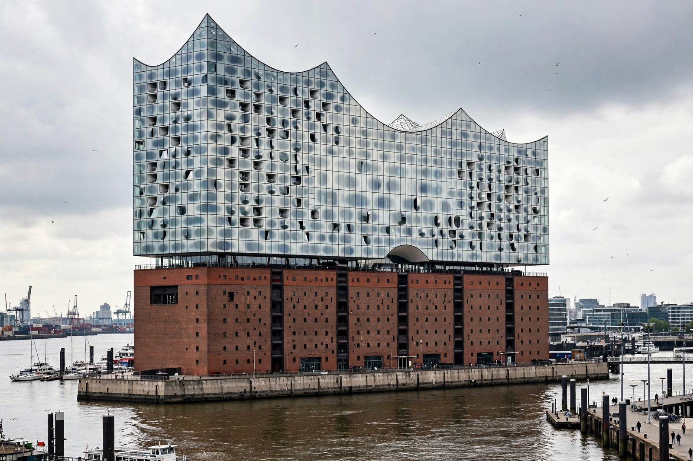

Pierre de Meuron
Pierre de Meuron (born 8 May 1950) is a Swiss architect, co-founder with Jacques Herzog of the Basel firm Herzog & de Meuron. In 2001 he and Herzog jointly received the Pritzker Architecture Prize, the profession's highest honour, recognising a body of work distinguished by inventive material research and by what the jury called a "masterful" transformation of familiar building types.

| Born | 8 May 1950, Basel, Switzerland |
|---|---|
| Nationality | Swiss |
| Occupation | Architect |
| Practice | Herzog & de Meuron |
| Awards | Pritzker Architecture Prize (2001, with Jacques Herzog) |
| Notable works | Tate Modern, Beijing National Stadium, Elbphilharmonie, Allianz Arena |
Career
De Meuron studied architecture at ETH Zurich under Aldo Rossi and graduated in 1975. In 1978 he established Herzog & de Meuron in Basel with Jacques Herzog, a friend since their school days. The partnership has produced an unusually broad oeuvre: the signal box at Basel railway station, clad in copper bands (1994); the Allianz Arena in Munich (2005), whose inflated ETFE panels glow red, blue, or white; the Beijing National Stadium (2008); and the Elbphilharmonie in Hamburg (2016).
The firm's museum work — Tate Modern and its Switch House extension in London, the de Young Museum in San Francisco, and the Pérez Art Museum Miami — has reshaped expectations for cultural buildings, while its Basel home base has been a laboratory for urban research through the ETH Studio Basel, which de Meuron co-founded with Herzog.
Approach
De Meuron and Herzog describe their buildings as arising from an almost archaeological attention to place, programme, and material; each project begins without a preconceived formal language, which accounts for the striking variety of their output, from stone-filled gabion walls to fritted glass and woven copper.
See also
References
- The Pritzker Architecture Prize — Jacques Herzog and Pierre de Meuron, 2001 laureates.
- Herzog & de Meuron, project archive, herzogdemeuron.com.